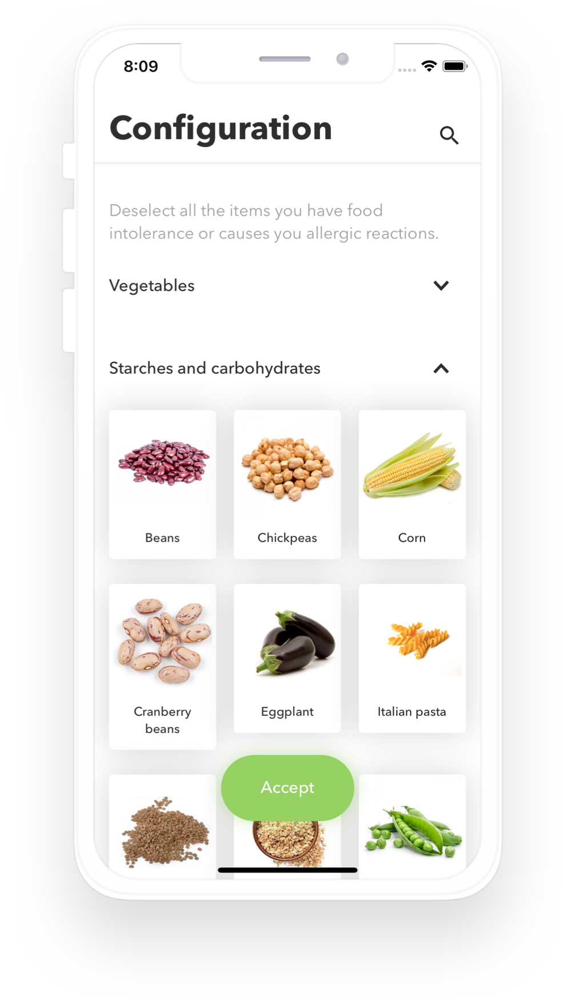
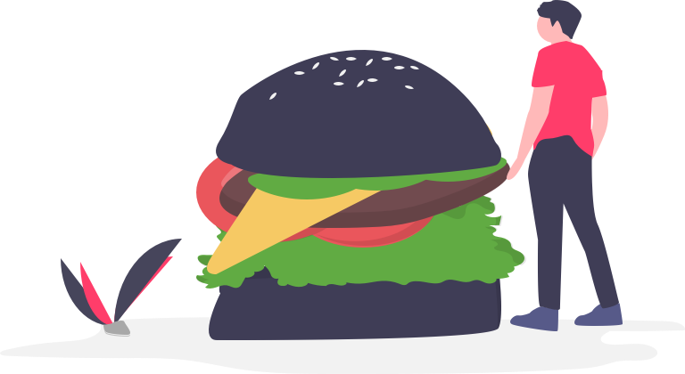
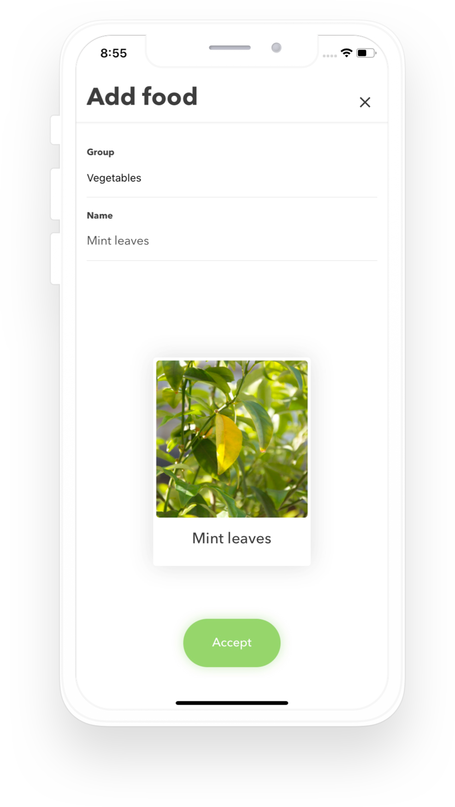
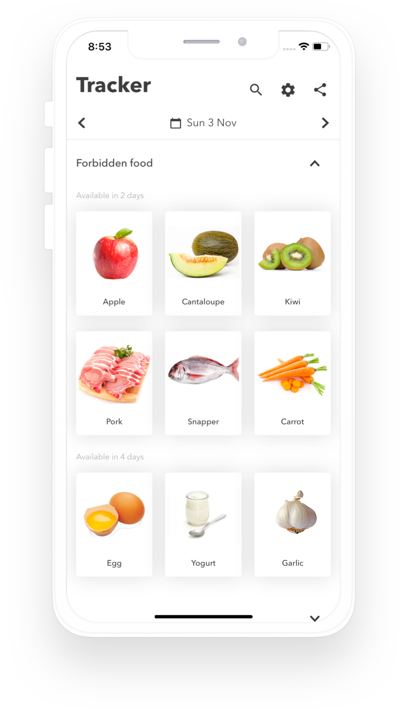

Track what you eat
Four days lets you keep track of what you are eating to avoid repetition and prevent you from forming new food intolerances.

Prevent intolerances
Avoid repeating the same food too often. That way you will help your gut healing.
Eat healthy
By tracking what you eat you can take informed decissions on how healthy your current diet is.

Protect your privacy
Your data is only yours! The app does not upload any data to the internet, ever.
Add your own food
Fully customize the food you are used to. Make it easier to track and get better feedback for your diet.


Can I eat this already?
With Four Days you will instantly know if you are eating something too often. Stop new intolerances from forming and help your gut heal.